Sekilas project
JIMNY COFFEE adalah sistem POS berbasis Laravel untuk kasir, admin, dan owner. Sistem ini menangani transaksi, stok, laporan, shift, izin, hingga integrasi QRIS.
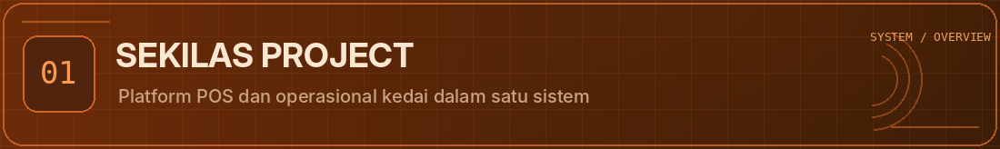
SYSTEM INTERFACE · BUILD · LEARN
Smart Point of Sale, coffee shop management, sales analytics, dan fondasi Smart Assistant untuk operasional yang lebih rapi.
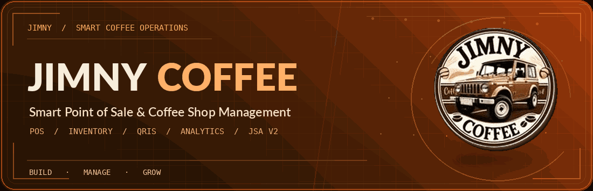
01
JIMNY COFFEE adalah sistem POS berbasis Laravel untuk kasir, admin, dan owner. Sistem ini menangani transaksi, stok, laporan, shift, izin, hingga integrasi QRIS.

02
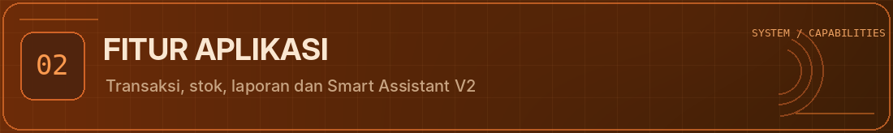
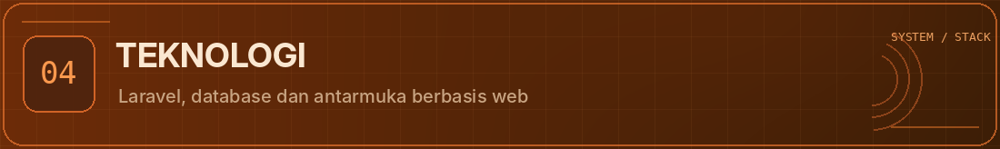
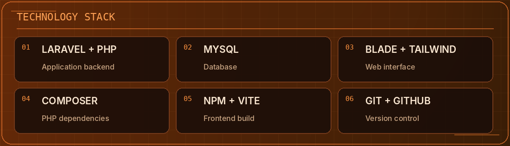
03
Cuplikan ringkas halaman utama dan antarmuka sistem.
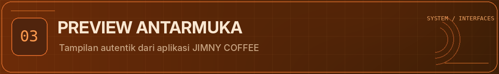
Alur singkat setup environment lokal untuk menjalankan project.
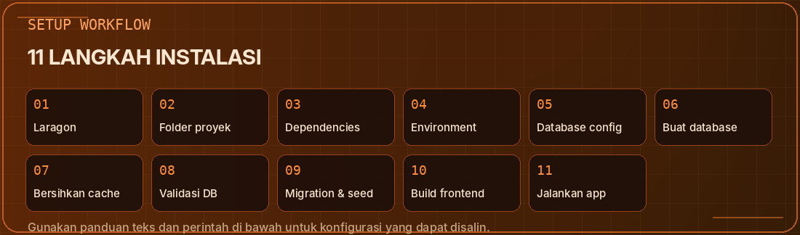
04
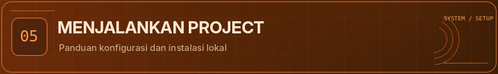
composer install
copy .env.example .env
php artisan key:generate
php artisan migrate --seed
npm install
npm run build
php artisan servePerhatian: Jalankan migration dan seeder hanya pada database lokal atau database pengujian yang memang disiapkan. Verifikasi konfigurasi .env terlebih dahulu. Jangan menjalankan seeder pada database operasional tanpa pemeriksaan dan backup.
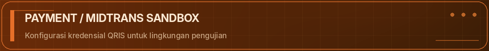
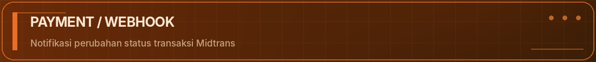
05
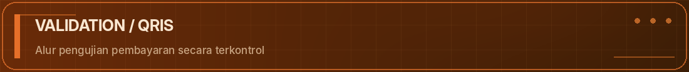
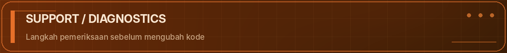
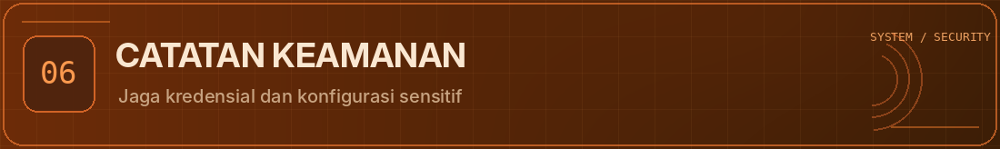
06
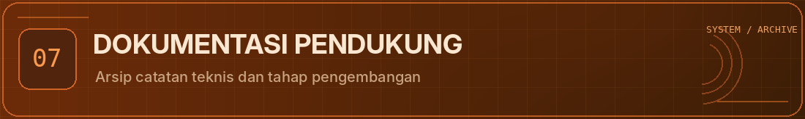
Halaman ini adalah landing page visual. Dokumentasi detail tetap tersedia di README utama dan folder arsip.